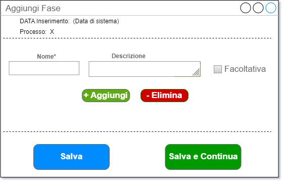
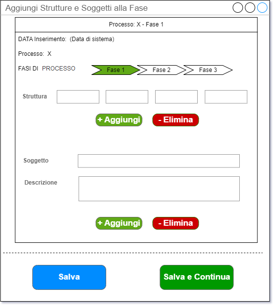

Il secondo step di specializzazione di un nuovo processo consiste nell’aggiunta delle fasi.
NOTA BENE
Disambigua bene le fasi di processo dalle fasi di attuazione di una misura.
I due oggetti si chiamano allo stesso modo (fase) ma sono completamente diversi (infatti sono memorizzati in due entità distinte dello schema).
Le fasi di attuazione di una misura sono semplici etichette ordinate in senso progressivo tramite un numero d’ordine che ne dovrebbe rispecchiare l’inserimento, mentre le fasi di processo sono oggetti più articolati, che possono avere una serie di attributi aggiuntivi oltre al nome (una descrizione, un flag di obbligatorietà / facoltatività, una coppia di date) e soprattutto hanno molteplici collegamenti con altre entità (le strutture, i soggetti contingenti) e rappresentano una serie di stadi attraverso cui passa la realizzazione di un processo organizzativo.
In letteratura sulla mappatura dei processi, le fasi sono anche chiamate “attività” o “azioni” e non vanno confuse con i sottoprocessi (che sono semplicemente processi organizzativi con uno scope più circoscritto rispetto ai processi di livello superiore).
Il flusso che ha portato all’inserimento delle fasi può derivare direttamente dall’azione di inserimento degli input di un nuovo processo (cliccando su “Salva e Continua”) oppure può azionarsi cliccando su un bottone ad hoc, posizionato p.es. nello spazio delle fasi (vuote) del processo precedentemente inserito (anche qui bisognerà verificare le assunzioni fatte a tempo dell’implementazione della pagina dei dettagli di un processo).

Le fasi di processo, differentemente dagli input, non possono essere condivise tra vari processi, per cui non c’è motivo di implementare una funzione di ricerca sulle fasi già inserite: assumiamo che le fasi inserite in questa maschera siano nuove ed esclusivamente incardinate sul processo corrente.
Cliccando su “Aggiungi” è possibile generare in modo asincrono nuovi campi per inserire, con un solo clic su un bottone di salvataggio, molteplici fasi.
Anche qui, sono possibili due flussi informativi:
“Salva” chiude la pagina di inserimento fasi, collega tutte le fasi immesse al processo corrente e riporta alla pagina diretta di visualizzazione del processo corrente;
“Salva e Continua” chiude la pagina, collega tutte le fasi immesse al processo corrente come sopra ma in più apre la maschera di assegnazione delle strutture e/o dei soggetti alle fasi stesse.

Tramite quest’ultima maschera è possibile aggiungere le strutture responsabili delle fasi e uno, o più, soggetti contingenti. Deve anche essere prevista la funzione di creazione di un nuovo soggetto contingente, se quello da inserire non è presente tra quelli già inseriti.